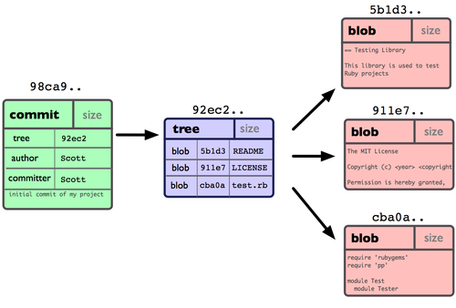

Décentralisé
- DVCS
- Décentralisé
Les 4 types d’objets
Blob
Contenu d’un fichier identifié par un hash

Tree
Liste de références vers des hashes

Les 4 types d’objets
Commit
Référence le hash d’un tree + métadonnées

- Identifié par un hash SHA-1
- Version courte ≥ 4 caractères possible (si non ambiguë) :
53b8=53b89fc7bb117aee396285f9bc6ce913599a6574
Les 4 types d’objets
Tag
Nom donné à un commit + métadonnées

Les commits


Orienté contenu
Des Snapshots, pas des diffs…

Les bases : Le staging et les commits
- git add / git rm
- git commit
- git status

Créer une branche
$ git branch testing
Switcher sur une branche
git checkout testing
Travailler sur une branche
$ vim test.rb
$ git commit -a -m 'made a change'
Travailler sur une autre branche (master)
$ git checkout master
$ vim test.rb
$ git commit -a -m 'made other changes'
Merge d’une branche dans une autre
$ git checkout master
Switched to branch 'master'
Merge d’une branche dans une autre
$ git merge iss53
Merge made by the 'recursive' strategy.
index.html | 1 +
1 file changed, 1 insertion(+)
Le fast-forward
Si possible, Git cherche à ne pas créer de commit de merge même si on lui demande un merge

Le fast-forward
$ git checkout master
$ git merge hotfix
Updating f42c576..3a0874c
Fast-forward
index.html | 2 ++
1 file changed, 2 insertions(+)
Le fetch

Le rebase

Le rebase
$ git checkout experiment
$ git rebase master
First, rewinding head to replay your work on top of it...
Applying: added staged command
Le bisect
Recherche d’un commit problématique par dichotomie
$ git bisect start
$ git bisect bad # Current version is bad
$ git bisect good v2.6.13-rc2 # v2.6.13-rc2 is known to be good
Intégration
L’hébergement
- GitHub
- BitBucket
- Gitlab
- Gogs